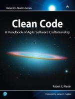
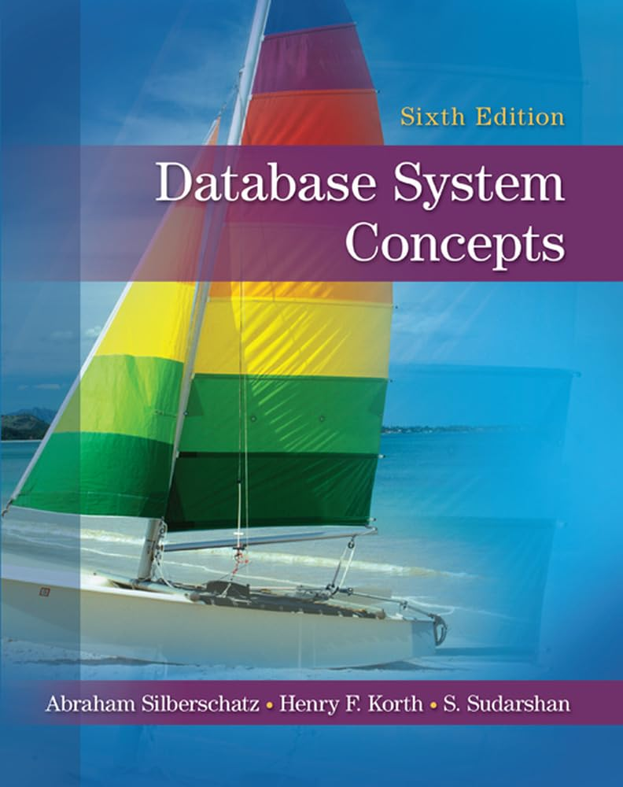
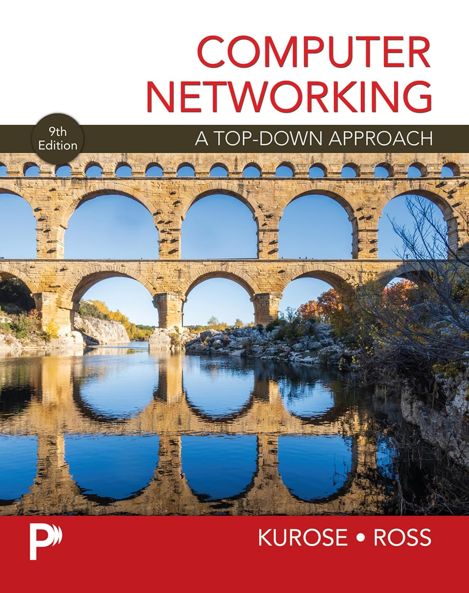

Clean code

Autor: Robert C. Martin
Gênero: Programação
Editora: Alta Books
Ano: 2009
Seu universo de conhecimento em um só lugar.
Conheça alguns livros disponíveis em nossa Biblioteca Digital.

Autor: Robert C. Martin
Gênero: Programação
Editora: Alta Books
Ano: 2009

Autor: James Kurose e Keith Ross
Gênero: Redes de Computadores
Editora: Pearson
Ano: 2021

Autor: Abraham Sliberschatz, Henry F.Korth e S. Sudarshan
Gênero: Banco De Dados
Editora: McGraw-Hill
Ano: 2019